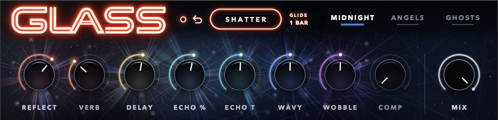

Blackout, round 4
The picked face: Flat cap, Neon button, and a line of each knob's colour along the top edge of its cap. The other options stay under the face for comparison.
Knob
Shatter
Cap light
Actual size in Live
Current device

Wordmark against the icon
Top: the icon. Bottom: the sprite the device would load, at the same size.